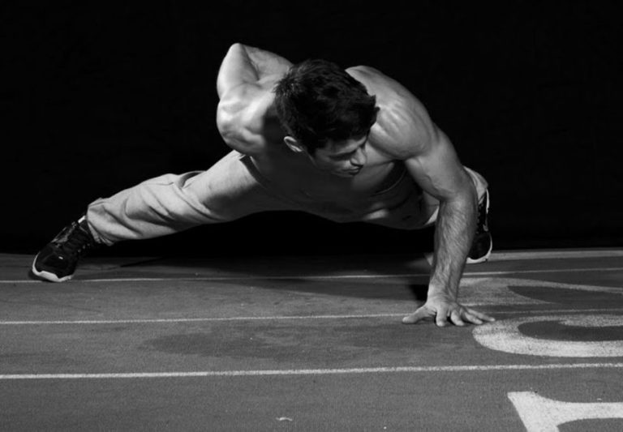
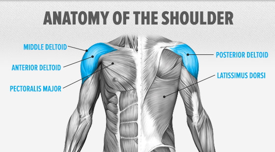
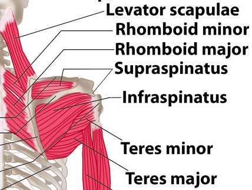

EN ETKİLİ OMUZ HAREKETLERİ!
Omuz hareketleri geniş ve güçlü bir fizik için vücut geliştirme antrenmanı içinde büyük önem taşıyor.
Giydiğiniz giysinin güzel görünmesi, iri görünmeniz için omuz kasları ve bunları doğru hareketler ile çalışmak çok önemli.
Bu yazıda omuz kası hatalarını yapmamayı öğrenecek, fitness yolculuğunuz boyunca sizi destekleyecek en iyi omuz hareketlerini tanıyacaksınız.
Öncelikle bu videoyu izlemenizi öneriyorum, bu biraz ileri seviye bakış açısı, ama geniş ve güçlü bir fizik için birçok kişi bu videoyu çok verimli buldu!
Omuz Antrenmanı Video
Omuz Kası Geliştirmek İçin Tavsiyeler
Antrenman sıklığını artırın: Bahsettiğimiz gibi omuz kası küçük kas grubudur, ileri seviye bir sporcu iseniz bu kasları haftada 1 çalıştırmak size yeterli olmayabilir, bunu en az 2’ye çıkarmayı deneyin.
- Azar azar sık yapmak, tek seferde çok yapmaktan iyidir. Full body mi split mi sorusu mesela, bu yüzden full body daha iyidir.
Farklı tekrar aralıkları ile antrenmanlarınızı şekillendirin: Sürekli aynı tekrar aralıklarıyla çalışmak uzun vadede size fayda sağlamayabilir, antrenmana farklı tekrar aralıkları ekleyerek o antrenmandan alacağınız etkiyi arttırabilirsiniz.
- Hep 5 yapıyorsanız, 15 tekrar da ekleyin mesela.
Hareketin uygulama hızına özen gösterin: Hareketi ağır kaldırmak uğruna çok hızlı şekilde uygulamak size fayda sağlamayabilir, özellikle yeniyseniz. Hareketin çok hızlı şekilde uygulanması biraz daha güç çalışmasına girmektedir. Özellikle negatif tekrarları kontrol altına alın, ağırlığı öylece bırakmayın.
Dinlenme aralarını çok uzun tutmayın: Omuz kası küçük kas grupları olduğu için toparlanmaları da hızlı olacaktır, egzersiz uyguladıktan sonra set aralarını çok uzun tutmayıp kasta gerimi sürekli kılarsanız gelişiminize fayda sağlayacaktır.

En İyi Omuz Hareketleri (Anatomiye Göre)
Omuz kası geliştirmede hangi hareketin omuz kaslarının hangi bölümünü daha aktif çalıştırdığını bilmek, antrenmanların daha verimli geçmesini sağlayacaktır.
Bu yazımızda biraz omuz kaslarımızın anatomisinden, daha sonra egzersiz seçimlerinden bahsedeceğiz.

Omuz Kası Anatomisi
- M.Deltoideus Anterior (Ön)
- M.Deltoideus Lateral (Yan)
- M.Deltoideus Posterior (Arka)
- M. Supras Pinatus
- M.İnfras Pinatus
- M.Teres Minor
- M.Teres Major
- M.Subscapularis

Omuz Kası İçin En Etkili Hareketler
- Overhead Press: M.Deltoideus Antreior
- Standing Dumbell Shoulder Press: M.Deltoideus Antreior
- Dumbell Front Raises: M.Deltoideus Antreior
- Seated Dumbell Shoulder Press: M.Deltoideus Anterior
- Standing Dumbell Lateral Raise: M.Deltoideus Lateral
- Bent Over Side Dumbell Lateral Raise: M.Deltoideus Posterior
- Bent Over Side Cable Lateral Raise: M.Deltoideus Posterior
- Push Up, yani şınav ise: M.Deltoideus Antreior
Arka omuz hareketleri
Omuzların arka kısmına ayrıca önem vermek istiyorum.
Arka omuzlar genelde ihmal edilir, bu çoğu zaman bilinçsizce, farkına bile varmadan ihmal edilir.
Şınav, bench press gibi egzersizler sürekli ön omuzları geliştirir, lakin arka omuzlar özellikle sırt kasları iyi çalıştırılmazsa çok geri kalabiliyor.
Bu da duruş bozukluklarına neden olabilmektedir. Kamburluk gibi.
Aşağıda bunun için en önemli egzersizlerden biri olan Facepull bulunuyor:
Arka omuz Video